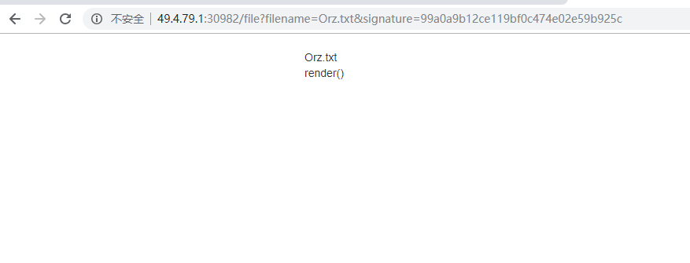

web
easy tornado
打开网站发现了三个文件：Orz.txt , hint.txt , flag.txt
Orz.txt

hint.txt
这里得到了将cookie_secret和md5了的文件名拼接再进行md5
flag.txt
这里得到了flag的文件名，前面的/很显然是在根目录下，需要构造../../../../fllllllllllag
在浏览器的 filename= 处随便输入一个字符会报错，跳转到 http://49.4.79.1:30982/error?msg=%E5%8F%82%E6%95%B0%E9%94%99%E8%AF%AF
漏洞就在这里，在msg后面输入就会显示出程序的信息。
原因：链接
于是就可以得到 cookie_secret’:
J7gK~cHPmSBlkywZ.n<CV_Fx#U@GjE?zqiM^s%(dRI$[4bo>]+6fXYD*t)&eLuT{
于是进行md5的加密(python2的加密法)：
1 | import md5 |
然后拼接再进行一次加密
明文：
J7gK~cHPmSBlkywZ.n<CV_Fx#U@GjE?zqiM^s%(dRI$[4bo>]+6fXYD*t)&eLuT{93c196e59a0d9acb8a8cfa754341e3c9
结果为：d6e3633176b95e540590810873fac562
然后出flag

PWN
gettingstart
这个题目貌似没什么好说的，算出偏移，然后覆盖就行，主要就是得注意下那个0.1就行。
1 | from pwn import * |
拿到shell后就找flag就行
Misc
迟来的签到题
easy xor???
1 | import base64 |
慢慢跑就能看到最后在b=255的时候就会跑出flag